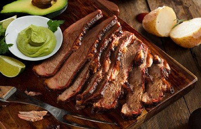

Carne Llanera
Región Orinoquía · Los Llanos Orientales
La carne llanera, también conocida como mamona, se caracteriza por ser de res joven o ternera asada lentamente en estacas de madera alrededor de una hoguera. Este plato tradicional se acompaña con yuca, plátano y guacamole.
La mamona nació como el plato de las celebraciones en los llanos. Las comunidades de la región tenían la costumbre de prepararla en fiestas y reuniones, aprovechando la abundancia de ganado. Compartirla se convirtió en un símbolo de hospitalidad — abrir las puertas de la casa y del corazón. (Molano, O. Y. R. 2025).
Técnica de asado
- Estacas de madera dura alrededor del fuego
- Cocción lenta de 4 a 6 horas
- Se voltea una sola vez
- Sin sal ni marinada — solo fuego y tiempo
- La grasa natural basta para el sabor
Hospitalidad llanera
Preparar una mamona es un evento social. Toda la comunidad participa — desde conseguir la leña hasta distribuir los cortes. Es un ritual que fortalece los lazos entre vecinos y familias de los llanos.
Acompañamientos
- Yuca hervida o asada
- Plátano maduro o verde
- Guacamole casero
- Ají llanero
- Chicha de maíz artesanal